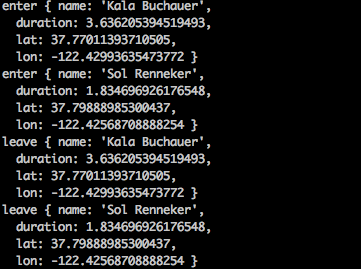

Date: 02-01-2016
Put more real-time map data on your team’s parking map.
Use the Transit Open Datasets to plot the real-time locations of bus vehicles on your parking app’s map. The Firebase location corresponding to the city of San Francisco is sf-muni.
Write a sever-side script to simulate the behaviors of the customers of your app who are entering and leaving the app. On your parking apps’ map, display these simulated customers in real-time.
A skeleton script is provided at /workers/simulate-parking-customers.js.
You need to first install some NPM packages by
npm install
To run the worker, assuming you are at the root of your book, do
node workers/simulate-parking-customers.js
You should see output like this:

enter() and leave() by adding the appropriate Firebase API
calls to write and delete customers at that Firebase location of your choice.#demo on Slack, along with your team members’ names.